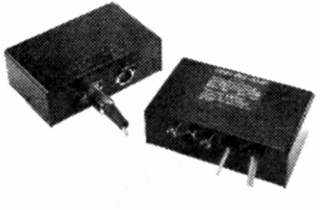

Pre Preamp

■価格 90,000円■型式 MC型カートリッジ用ヘッドアンプ■入力感度 0.1mV■出力レベル 2V■負荷抵抗 ■周波数帯域 20-20,000Hz±0.5dB■SN比 ■全高調波歪率 0.02%■重量 アンプ部 320g 電源部 570g■寸法 W12.4×H4.4×D7.6�p（アンプ部・電源部共通）■発売 1981年4月■販売終了 1983年頃■備考 備考 価格は1981年頃のもの
LINNのインデックスへ